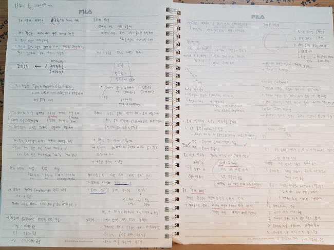

Popular Tags
- #프로그래밍
- #자연과학
- #철학
- #수학
- #물리학
Latest Book
프로그래머를 위한 수학
최무영 교수의 물리학 강의
러셀 서양철학사
모두의 코딩 시리즈
러셀 서양철학사
2020년 2월 13일
근대 철학사 중, 롭스의 리바이어던 챕터
20년도에 들어서기 전에, 알라딘에서 받은 광고 메일 중 하나에 철학아카데미에서
진행하는 서양철학사 강의를 듣고싶어하는 이유를 적어내면 강의료를 50%깎아준다는
소문을 듣고 냉큼 응모했더니 당첨이 되어서, 서양철학사 책을 들고 서울로 가서 강의를 듣게 되었습니다.
서양철학사 자체가 고대철학~20세기초반의 철학까지 아우르는 책이라 한번에 다 배울수는 없었고,
이번 겨울학기때는 근대철학만을 집중적으로 배우게 되었는데 오히려 지루한 고대철학을 듣지
않아도 되서 더 좋았던 것 같습니다.
책에 대해서 짧게 이야기해보면 서양철학사(史)라는 책 제목답게, 철학적 개념을 자세하게 설명하기 보다는 인물과 그 시대상의 설명이 주로 이루어집니다.
제가 듣던 강의의 교수님께서 언급해주시길, 역사를 다루는 책이라
필자인 러셀의 생각과 신념이 어느정도 들어갈 수 밖에 없기에 러셀 자신의 생각이 담긴 쪽은 한번쯤 생각해보면서 읽으라고 하셨습니다.

강의 들으면서 적은 노트
철학 아카데미에서의 강의는 성균관대학교 박정하 교수님께서 해주셨는데, 자칫 지루할 수도 있는
철학에 대한 개념들을 자세하고 위트있게 가르쳐주셔서 시간가는줄 모르고 강의를 들었습니다.
같이 강의를 듣는 분들의 나이 스펙트럼이 20대에서 70대 어르신들까지 다양했어서 좀 놀랐는데,
어르신이나 중년분들도 굉장한 학구열을 갖고계신걸 보면 저도 더 노력해야겠다는 생각이 들었습니다.